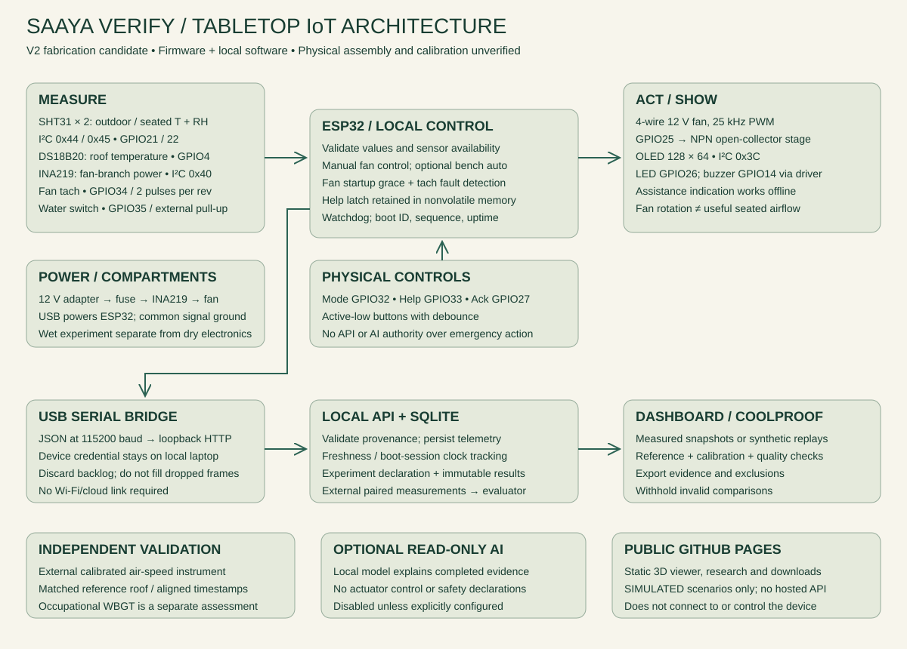

Shade + double roof
A reflective removable top, ventilated gap and shaded seated zone form the core. Measure roof response against a matched reference.
CORE PROTOTYPEVELLORE, TAMIL NADU / OPEN ENGINEERING
A small shelter with a bigger question: can we make outdoor rest spaces work better, using less?
SAAYA combines passive cooling, local sensor control and an evidence trail that knows when to say “we don’t know yet.”
Rotate the model. Lift the roof. Find every component.
02 / COOLPROOF LAB
Replay a repeatable, synthetic bench scenario. These numbers illustrate system behaviour; they do not predict cooling in Vellore.
60 synthetic samples · seed 1 · 1 s sample spacing · playback accelerated. Parameters lock when replay starts.
Ready. No experiment started.
EVIDENCE RECORD
An invalid comparison produces no improvement claim.
PRESENT TO YOUR PANEL
Explore the IoT block diagram, inspect labelled CAD, and explain why sensors, controller, display and actuators are placed where they are.
Open the teaching walkthrough →03 / OLD IDEAS, MEASURABLE QUESTIONS
Traditional architecture offers useful principles. Each one still has to earn its place in this climate and at this scale.
A reflective removable top, ventilated gap and shaded seated zone form the core. Measure roof response against a matched reference.
CORE PROTOTYPEInterchangeable screens explore shading versus airflow resistance. A windcatcher is an experiment, not an assumed cooling gain.
REPLACEABLE TEST PARTSEvaporation depends on weather and creates cleaning demands. A separate non-potable module is deferred until local tests justify it.
DEFERRED / NOT AUTOMATIC
Sensors → validation → independent local controls → source-labelled telemetry → CoolProof. The public site runs synthetic replays. Real USB telemetry is available through the local bench API.
04 / RESEARCH REGISTER
Eight dossier references plus targeted research on traditional mechanisms, prior art and Vellore climate. Access depth is recorded; a citation is not prototype validation.
Loading research register…
05 / FROM DRAWING TO BENCH
A fabrication candidate, not a certified product. Real hardware measurements are still required before cooling or safety claims.
AI / READ-ONLY BY DESIGN
The optional local-model analyst receives a finished experiment and a curated source register. Its explanation cannot change controls or the recorded outcome.
No model is connected to this public demo. Deterministic evidence checks run without AI. Learned control is deferred until measured training and independent evaluation data exist.
Run the local bench API ↗When this site is served by the local bench API, this panel reads actual USB-forwarded measurements. Public hosting never pretends to host the device service.
No physical device connected.
06 / COST AND RESOURCES
Compare full installed costs, then compare the services honestly. An open shelter does not provide a room AC’s temperature control or dehumidification.
Solar is optional and separately costed. Instrument rental, transport and fabrication must be priced before procurement. No purchase has been made.
07 / WHAT THIS DOES NOT PROVE
Miniature convection and radiation do not transfer directly to a worker-sized shelter.
Fan RPM is not seated air speed. Temperature and humidity alone cannot establish occupational heat safety.
Dust, rain, corrosion, noise, water hygiene, maintenance and access to breaks can outweigh a laboratory gain.
Thermal benefits, worldwide novelty, structural adequacy and fabrication fit remain unproven until tested.